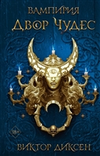
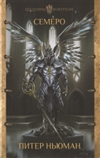
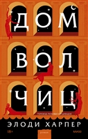
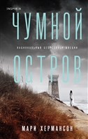
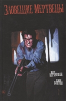

| Новинки литературы | |
|---|---|
|  Двор чудес Диксен В. 875 ₽ |
Во Дворе Чудес оживают самые прекрасные сны... и самые страшные кошмары тоже". В глазах Версаля Диана де Гастефриш — фаворитка Людовика XIV, верховного вампира, который вот уже триста лет навязывает Франции и Европе свое кровавое иго. На самом деле ее зовут Жанна Фруаделак —она принадлежит к Фронде, секретной организации, работающей над разрушением империи Короля Тьмы. В чреве Парижа появляется таинственный вампир-отступник, правящий подземным двором, населенным упырями и мерзостями. Луи поручает своим лучшим фехтовальщикам захватить эту неуловимую соперницу и завладеть ее армией, что сделает его могущественнее, чем когда-либо. |
|  Семеро Ньюман П. 734 ₽ |
Прошли годы с тех пор, как Странник добрался до Сияющего города. Все вокруг изменилось. Теперь людям и инферналям приходится существовать бок о бок, а Веспер, дочь Странника, пытается привести новое общество к единству и процветанию. Но опасность приходит от тех, кто все это время спал. Тех, кто был создан защитить мир от демонов, но потерпел поражение. Теперь они проснулись, решив исправить свои ошибки. |
|  Дом волчиц Харпер Э. 764 ₽ |
Роман — переосмысление судьбы женщин в древних Помпеях. История о том, как изменить обстоятельства, простить себя и обрести внутреннюю свободу. Амара — рабыня в Помпеях, ее тело принадлежит мужчинам, которых она презирает. Но ее дух не сломлен. Днем она гуляет по улицам с подругами по несчастью, находя утешение в смехе и мечтах о лучшем будущем. |
Порча Кабир М. 509 ₽ |
Новая леденящая кровь история от Максима Кабира, лауреата премий "Мастера ужасов" и "Рукопись года", автора романов "Скелеты" и "Мухи"! Добро пожаловать в провинциальный городок Московской области, где отродясь не происходило ничего примечательного. Добро пожаловать в обычную среднюю школу, построенную в шестидесятые — слишком недавно, чтобы скрывать какие-то мрачные тайны… |
|  Чумной остров Хермансон М. 690 ₽ |
Гётеборг, 1925 год. Из мутных вод реки Севеон вылавливают труп хорошо одетого мужчины. Тонкая, но глубокая кровавая рана, зияющая под шелковым шарфом на его шее, не оставляет сомнений: мужчину удавили. Удавили очень жестоким и экзотическим способом – гарротой, испанским орудием казни, сдавливающим шею тонкой железной струной… Несколько лет назад в Швеции уже произошла целая серия подобных убийств. |
|  Зловещие мертвецы Верхейден М. 899 ₽ |
Отпразднуйте 40-летие культовой хоррор-классики Сэма Рэйми! Сценарист Марк Верхейден («Эш против зловещих мертвецов», «Меня зовут Брюс») и художник Джон Болтон («Боже, храни королеву»; «Арлекин Валентайн») представляют захватывающее дополнение к фильму, который познакомил нас с могущественной книгой мёртвых, жестокими дедайтами и Эшем: стойким, перепачканным кровью последним выжившим. |